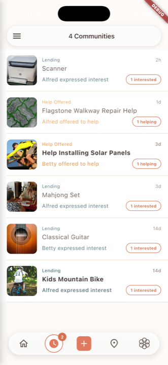
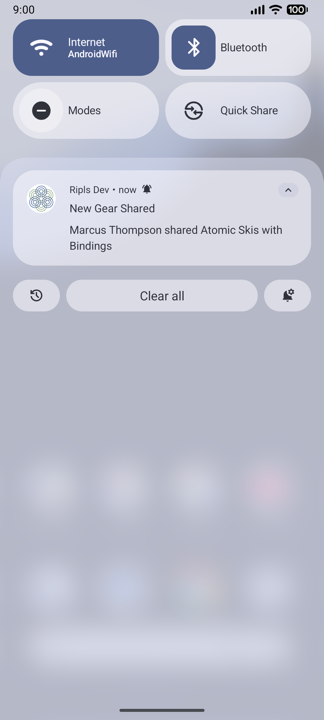
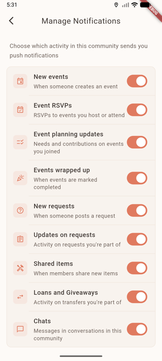

One month in.
A tour of what shipped in the first month of the Ripls private beta — and the people who helped find the bugs along the way. April 1 – April 30, 2026.
Ripls is for the latent host — the friend, neighbor, or family member who would host the potluck or rebuild the fence if the coordinating didn't break them. What they lack isn't intent; it's bandwidth. Group threads, Doodle, Venmo, Mealtrain, calendar invites, the half-spreadsheet — every modern tool solves one slice of the work, none of them know about the others, and most latent hosts give up before they start.
The product replaces that patchwork with a single layer built around a small invite-only circle, anchored to a real-world place like a block, school, gym, or family. AI handles the invite, the claim list, the RSVPs, the reminders, and watches for momentum so the next instance of a recurring thing gets proposed instead of forgotten. The host's job shrinks to deciding to do the thing.
Above all, we want to thank our very first testers for all their help — finding bugs, giving us ideas and inspiration, and supporting us through the rough edges of an early build. We've been busy trying to respond to that feedback and make Ripls viable as a tool for everyday use. Nine releases shipped this month — 0.11 through 0.18, roughly one every three days. Here's what we've been up to.
Phone signup, deep-linked invites
Land in the right place, every time.
Sign up with a phone number, no email or password. An invite link survives a Play Store or App Store install — the invite code follows the recipient through the install and lands them on the shared content instead of a generic "page not found".
Media improvements
Photos that work like photos.
Multi-image upload from the camera roll, a redesigned media screen with long-press reordering, individual deletion, attribution bars on third-party media, batch download with "Save All", and a media carousel reachable from chat or the photo strip on any item.
The Plan tab
Claim a slot, in one tap.
Experiences and requests share a collaborative Plan tab. Organizers list what's still needed with slot counts; participants tap "I got this" or add a free-form contribution. The back-and-forth surfaces as system messages in the conversation so the whole group stays in sync without anyone running a spreadsheet.
Released 0.17 · #1192, #1201, #1208
Requests and offers, on the event itself.
Need help with the gear? Got a spare cooler? Both go right on the event view alongside RSVPs — no separate thread, no out-of-band texting. The same Plan tab carries needs and contributions for both events and requests.
Released 0.17 · #1201
Chat, in context
The conversation lives on the thing — and on the circle.
Every item — every loan, every request, every event — has its own chat right there on the thing. Tap the message; you land on the item with the chat tab open. Emoji reactions, multi-photo attachments staged above the input, and tappable links in descriptions all live in the same surface.
And now every circle has its own chat too. The Boulder Backcountry Crew, the school list, the block — each one is a place where the group can talk about anything that doesn't fit on a specific item, and that conversation is pinned to the top of the inbox so it never gets lost.
Released 0.10 – 0.19 · #1029, #1031, #1124, #1139, #1140, #1646
Time polls
When the right time isn't obvious.
Open a poll, people vote, the winning slot becomes the event time. Closed polls are preserved so a follow-up poll on the same event doesn't clobber the original comment thread.
Released 0.17 · #1219, #1245
Streaming AI generation
Title, description, time, location — all live.
AI-assisted creation streams its work as it goes. Title and description populate first; location and time fill in as they're parsed. Time-to-first-content dropped about 78% on device, and streaming now runs end-to-end through community, gear-image, and request-image flows. Event URLs from Eventbrite, Meetup, Luma, and AllEvents pull dates and locations directly from JSON-LD.
Released 0.17 + 0.18 · #1140, #1157, #1253, #1502, #1540, #1554, #1567
The timeless inbox

Watch what matters; ignore what doesn't.
The inbox stopped being a chronological list of events. Items you own, borrow, RSVP to, or offer on are auto-watched, with unread badges surfacing real activity. Swipe to dismiss; manually watch or unwatch anything; a participant ring shows who's already in. Rows show "expressed interest" / "offered to help" callouts so a host knows what's waiting on them at a glance.
Released 0.16 · #1102, #1151, #1170
Across communities, all at once
Switch between circles, or see them together.
One sidebar selection no longer scopes the whole app to a single community. Pick the circles that matter right now — the block, the school list, the run club — and the inbox, the calendar, the impact summary, and search all aggregate across them. Items shared into multiple circles deduplicate into one row.
Released 0.16 · #1102
Notifications you can tune


Per circle. Per kind of activity.
Notification settings now live per community, not just globally. Decide which activity matters for which circle — events from the school list, but only chat from the block — and the rest stays quiet.
Released 0.18 · #1107, #1553
Generalized undo
Take back any state change.
Started a loan by mistake? Marked an event complete too early? Accepted the wrong offer? Undo is right there in chat, the story feed, or a snackbar. The server records enough prior state to replay the inverse faithfully — including cascade effects, like sibling transfers being auto-cancelled when a giveaway completes.
Released 0.17 · #964, #1207, #1228
Swiping content navigation
Same content, three swipes.
Gear, requests, and experiences all share a consistent swipeable layout now. Lend, borrow, RSVP, and offer actions are integrated directly into each view instead of behind separate sheets.
Released 0.16 · #1102, #1168
Accessibility & Spanish
Two pieces of work that don't have a screen-grab but matter as much as anything that does.
The app works for everyone. Every button, link, and toggle now has a label that screen readers can announce — so blind and low-vision users can navigate the app the same way as anyone else. Animations quiet down for people who get motion sickness from them. Status indicators that used to rely on color (red dot vs. green dot) now also tell you what they mean in words. Every change like this is checked automatically before the code can ship, so we don't backslide. The cataract neighbor, the aging parent, the widower, the friend who uses VoiceOver — they can all use Ripls. Across 0.16 – 0.18
Spanish, end to end. About 1,400 phrases — every button, every error message, every push notification — are now translated. If your phone is set to Spanish, Ripls speaks Spanish back. We built it the careful way, so adding the next language (Portuguese, Mandarin, whatever the next circle needs) is a translation exercise, not a re-engineering project. Across 0.10 – 0.18
Bugs you found, bugs we squashed
None of these found themselves.
- Chat notifications didn't deep-link to the chat tab — taps got lost during navigation or showed stale messages on cold start. Reported by Leslie across 0.10, 0.12.1, and 0.15.
- Add gear from URL kept failing on common retailer sites; switched to a browser-like User-Agent and added localized error messages. Success rate jumped from 61% to 71%. Reported by Thomas in 0.10.
- Auto-capitalize was missing on the feedback sheet. Reported by Leslie in 0.10.
- Couldn't edit a media item. Redesigned the media screen with photo upload, batch download, long-press reordering, deletion, and attribution bars. Reported by Lisa in 0.11.
- "Start your first loan" went to the wrong place, and nudge cards kept appearing for users who already had in-flight activity of that type. Reported by Brian in 0.11.
- "Failed to complete experience" on events that were in the JOINED state. Fixed by accepting JOINED experiences in RecordAttendance. Reported by Leslie in 0.12.2.
- Couldn't tap lend or giveaway buttons on small screens — creation preview modals overflowed with large text. They scroll now. Reported by Marc in 0.12.2.
- Edit fields scrolled out of view behind the keyboard. Resolved across multiple creation surfaces. Reported by Eric.
- Wrong location from event URLs. Creating an experience from an Eventbrite or Meetup URL sometimes resolved the wrong place — Boulder County Jail instead of Boulder Airport, that kind of thing. JSON-LD location now wins, with geo coordinates flowing through to Mapbox as proximity bias. 0.15, #1134.
- Description got overwritten by AI when adding a photo to a typed item or event. Text mode now preserves your description verbatim; the LLM only fills in metadata. Reported by Leslie in 0.15.
- Homepage seemed non-intuitive. Filed via in-app feedback; informed the unified content-views redesign in 0.16. Reported by Joanne.
- "Be the first to borrow" appeared on items you own. The borrow prompt now respects ownership. 0.16, #1163.
- Communities with members showed "0 members" due to a count-query bug, and the inbox showed "on loan" when only interest had been expressed. Both fixed. 0.16, #1161, #1164.
- Recipient withdrawal was ending the giveaway. A recipient changing their mind no longer ends the giveaway for everyone else. 0.18, #1565.
Thanks
Thanks to our testers and bug reporters:
Brian · Eric · Joanne · Leslie · Lisa · Marc · Susan
What it added up to
After a month: 17 people across 12 circles, 61 items shared, 29 events planned, 59 RSVPs, 401 chat messages, and 86 photos uploaded onto shared items. Across all the completed loans, giveaways, fulfilled requests, and finished events:
Next: the recurring side — standing things, repeat project days, the system noticing what's worth doing again. Thanks for being here.
More
- Release notes 0.18.0 — April 30, 2026
- Release notes 0.17.0 — April 24, 2026
- Release notes 0.16.0 — April 20, 2026
- Full release notes index
- Back to home